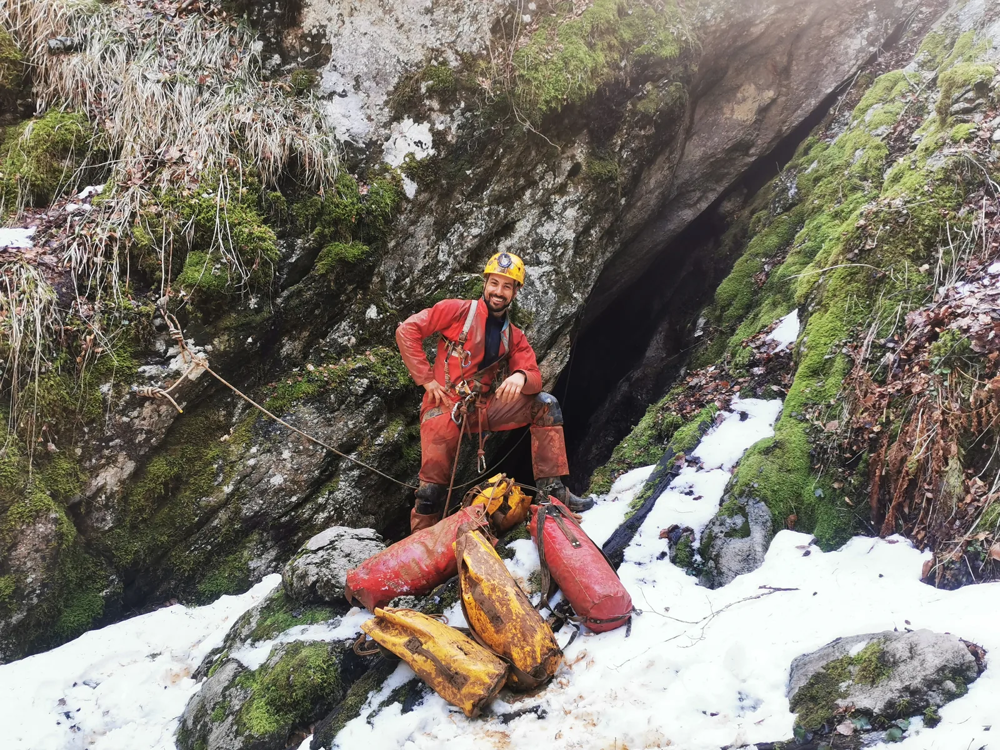

Nastavak istraživanja u JSC
Izlet prije dva vikenda u KUV nam je zaigrao maštu nakon što smo stali usred penja u kanalu Mic - Mic

Napisao i fotografirao: Marko Rakovac
Datum istraživanja: 26.-28.3.2021.
Sudionici: Lukas Grbac Lacković, Luka Ivančić, Luka Havliček i Marko Rakovac
Prije dva vikenda smo nakon dugo vremena nastavili istraživanja u Kiti. Velebitaši i Mihovilci su započeli niz istraživanja u kanalu Kita u Velebita (KUV) te su upali u niz bočni ali i blatnih spletova kanala. No krenimo ispočetka. Izlet prije dva vikenda u KUV nam je zaigrao maštu nakon što smo ostali usred penja u kanalu Mic - Mic. S obzirom da nismo bili adekvatno pripremljeni prošli put za napredovanje u plus, odmah smo po povratku s Crnopca otišli do oružarstva i pripremili novi 30m dinamik, ljestvice, mobilna sidrišta i bolja svrdla za bušilice.
Ovaj put u petak popodne nešto kasnije krećemo i stižemo na parking kite od 22h. Svi četvero (Luka, Lukica, Lukas i Raki) spuštamo se za sat vremena na Grlić, kuhamo večeru i kujemo plan za subotu. Luka i Lukica će u Minđanu (KUV), gdje su prošli put stali s istraživanjem Marina i Lovel, a Lukas i ja nastavljamo s penjanjem u Mic-Mic penju. Nakon što smo stigli do Trulog bivka (cca 45 min od Grlića), rastajemo se na sjecištu kanala u KUV. U Mic-Micu je ovaj put je Lukas penjao te smo nakon 48m tehničkog penjanja ušli u novi splet lijepih fosilnih kanala u kojem je zamijećeno strujanje zraka koje treba dalje slijediti. Lukica i Luka su istraživali u Minđani te su taj dio nazvali Porkerija, očito zbog gline koja ih je tamo zatekla dok su Lukasovi i također bili teški odnosno blatni. Da su ti glinom ispunjeni kanali zaista umarajući za istraživanje, uvjerili smo se ovaj vikend. Havliček je komentirao da bi takve kanale prilikom predaje nacrta u katastar trebalo honorirati 3 puta više jer se 3 puta sporije krećeš zbog gline koja se lijepi na svaki komad opreme.
U svakom slučaju takvi kanali imaju svoju (glinenu) čar te ih treba istraživati s dozom strpljivosti i razumijevanja za raznolikosti u podzemlju, kako nas ne bi (doslovno) ubili u pojam. Ovaj vikend smo povukli (izmjerili) 222,5 m vlakova te će se obradom podataka dobiti konačna duljina novoistraženih kanala.